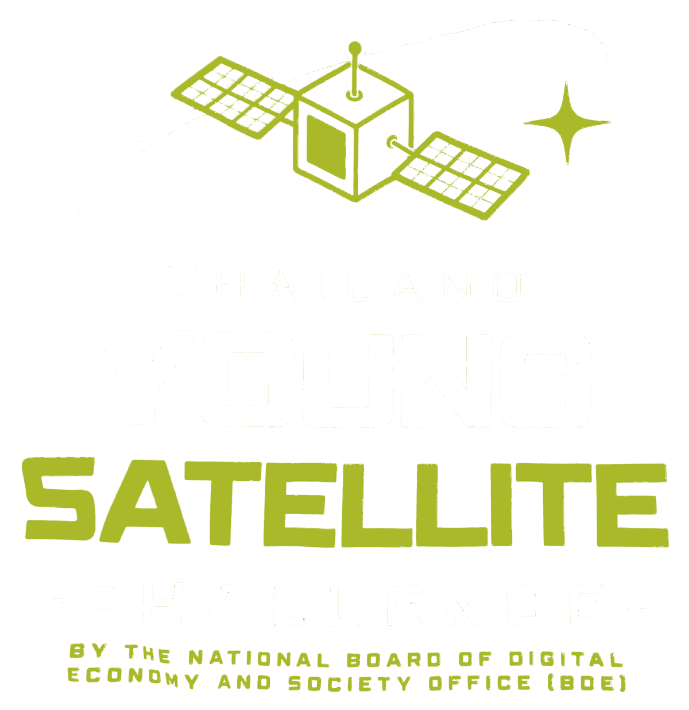
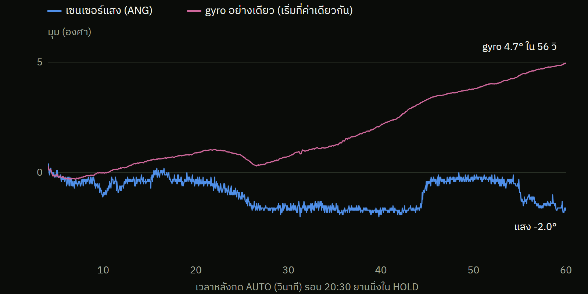

เซนเซอร์แสงบอกว่ายานอยู่ที่ −2.0° แต่มุมจาก gyro อย่างเดียวลอยไป +4.7° (ราว 0.12 °/วิ) และลอยไม่เป็นเส้นตรง
ภารกิจ 2 ถ้าเป้าเลยมุมที่เซนเซอร์แสงเห็น ยานต้องใช้ gyro อย่างเดียว ถ้าไม่ตั้งศูนย์จะคลาดราว 3° ต่อ 30 วินาที
แก้: ตั้งศูนย์ gyro (TEAM_GYRO_ZERO) ก่อนทุกภารกิจ